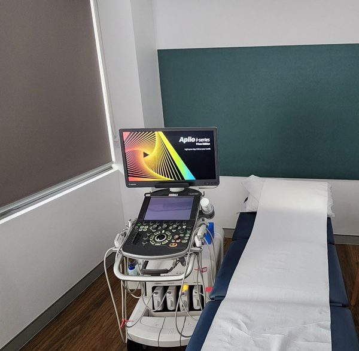

Musculoskeletal ultrasound is a subgroup of diagnostic ultrasound. Dr Duncan has been a pioneer in the use of musculoskeletal ultrasound for both diagnosis and guided injection therapy, having performed well over 50,000 therapeutic injections.
When MSK ultrasound is most useful
Musculoskeletal ultrasound is best used to assess specific structures suspected to be abnormal, or to answer specific clinical questions. For example, it is excellent for assessing the rotator cuff or answering a question such as "is there a tear in the supraspinatus tendon?"
It is not ideal when the problem is poorly defined ("what is the cause of the left arm pain?"). Ultrasound is also limited for assessing deeper structures as image resolution declines with depth, and it cannot see through bone.
For structures close to the skin surface, ultrasound has better spatial resolution than any other imaging modality — including MRI.
Why MSK ultrasound complements MRI
Dr Levon Nazarian, professor of radiology at Thomas Jefferson University, outlined ten reasons MSK ultrasound is an important complement or alternative to MRI (American Journal of Roentgenology, June 2008):
- Everyone can undergo an ultrasound
- Ultrasound can resolve finer details than MRI
- Ultrasound allows real-time, dynamic examination
- The probe can be placed exactly where it hurts
- Ultrasound can effectively image patients with surgical hardware
- Doppler ultrasound gives important information about vascularity
- Ultrasound is better than MRI for distinguishing cystic from solid material
- Ultrasound is better for guiding therapeutic interventions
- Ultrasound facilitates bilateral comparison
- Ultrasound has a more flexible field-of-view
Why clinical context matters
The value of MSK ultrasound is much greater when done in conjunction with clinical assessment to define the nature and anatomical site of concern. Images captured in MSK ultrasound are operator-dependent, and the outcome of the scan depends on the clinical and technical experience of both the doctor and sonographer.
Where possible, the reporting doctor should be involved in assessing your problem directly.
Guided injections
Perhaps the biggest advantage of MSK ultrasound is its use in guiding targeted injections. Ultrasound-guided injections of corticosteroid, PRP, or other substances directly into or around specific structures can provide excellent symptomatic relief.